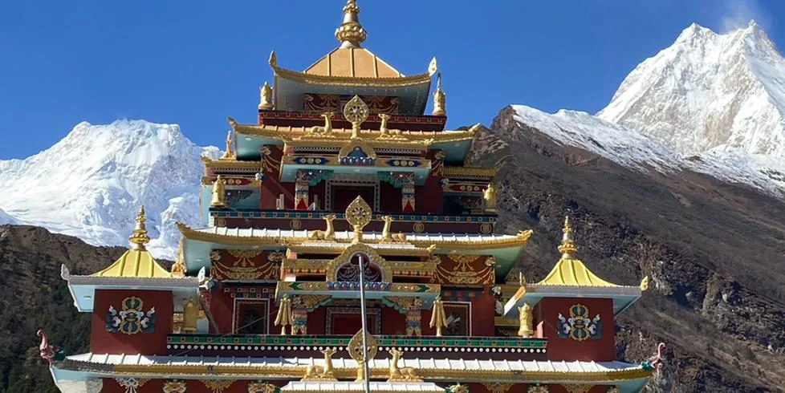
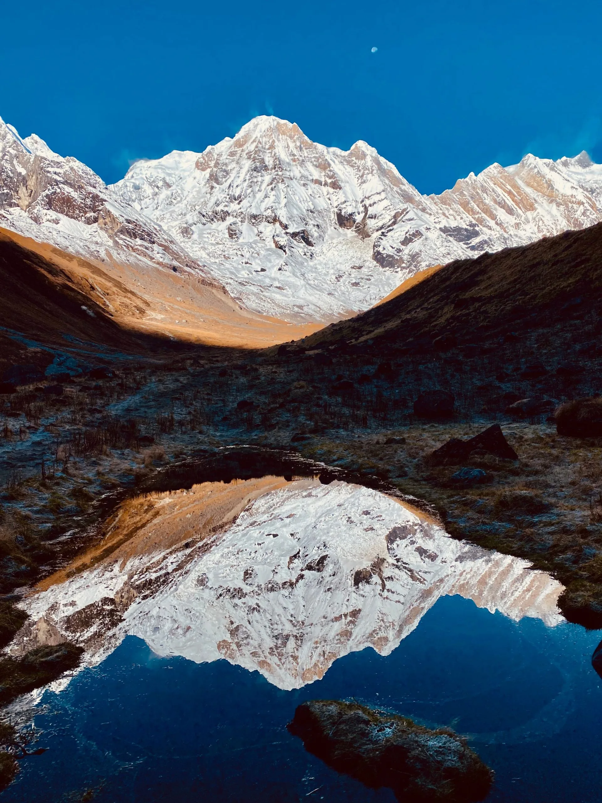
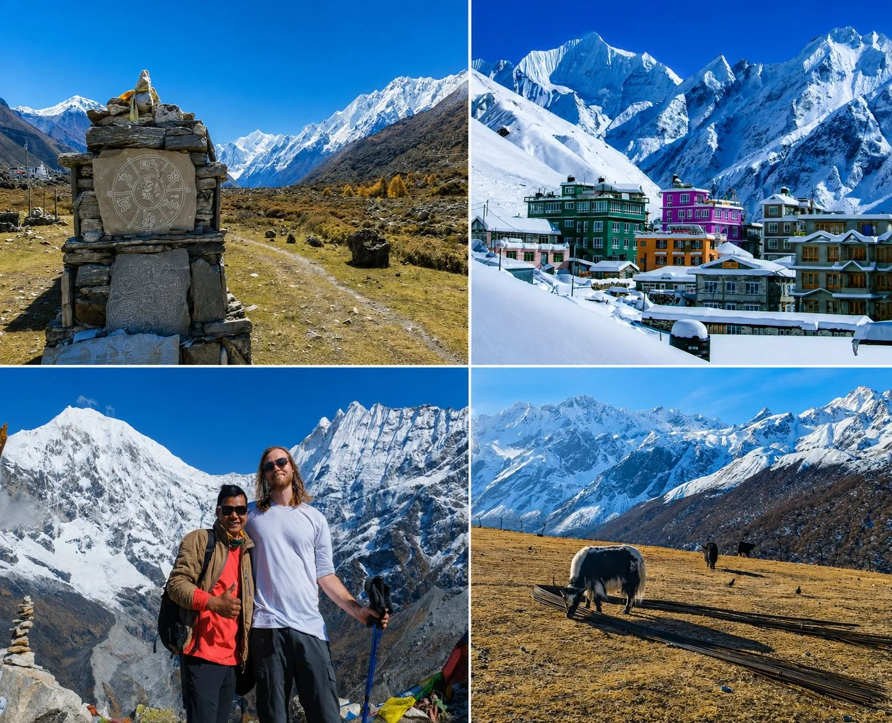
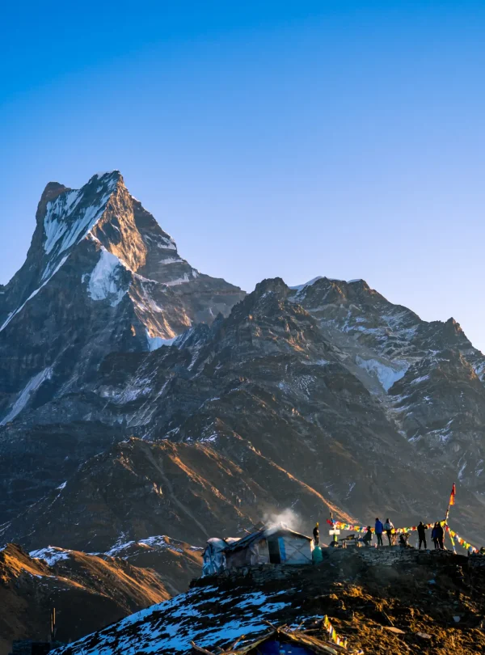
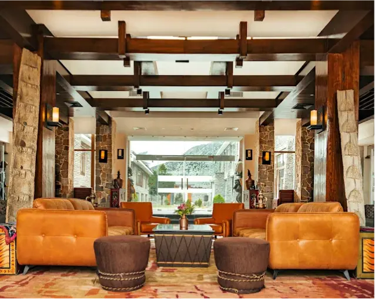
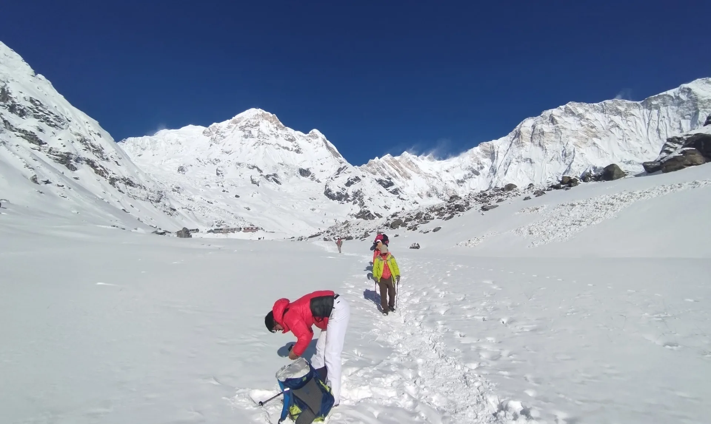
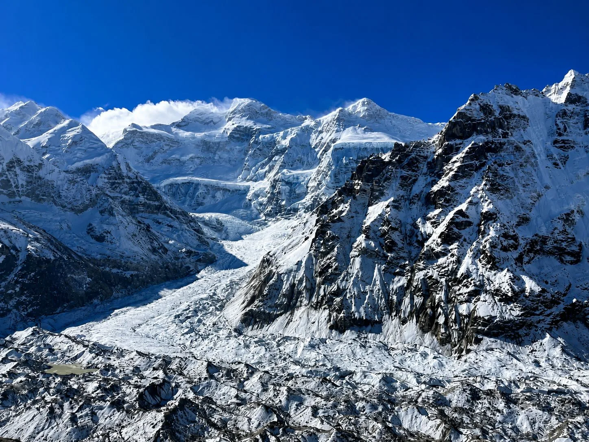
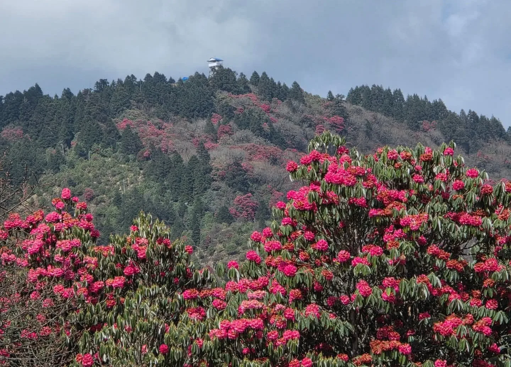

1. Strategic Trekking Overview: Choosing the Right Himalayan Trail in 2026
Trekking in Nepal has entered a new era in 2026. While the timeless grandeur of the high Himalayas remains as awe-inspiring as when early mountaineers first explored these valleys, the infrastructure supporting trekkers has modernized dramatically.
High-altitude teahouses now feature heated dining rooms, extensive international food menus, hot gas-powered showers, and even Starlink satellite internet in remote glacial outposts like Gorak Shep and Sama Gaun. Simultaneously, the Nepal Tourism Board (NTB) has strictly enforced the mandatory licensed guide regulation across all national parks and conservation areas, ensuring higher safety, environmental stewardship, and prompt search-and-rescue response.
With dozens of trails spanning eight distinct mountain massifs, choosing the right route depends on your available timeframe, physical fitness, tolerance for altitude, and appetite for cultural immersion versus raw wilderness. Below is our master comparative decision matrix for 2026:
| Trek Route | Region | Standard Days | Max Elevation | Difficulty Level | Crowd Level | Best Season |
|---|---|---|---|---|---|---|
| 1. Everest Base Camp (EBC) | Khumbu / Everest | 12 – 14 Days | 5,545 m (Kala Patthar) | Strenuous | High (Popular) | Mar–May, Oct–Dec |
| 2. Annapurna Circuit | Annapurna / Manang | 12 – 16 Days | 5,416 m (Thorong La) | Challenging | Moderate to High | Mar–May, Oct–Nov |
| 3. Manaslu Circuit | Manaslu / Gorkha | 14 – 16 Days | 5,106 m (Larkya La) | Challenging | Low to Moderate | Mar–May, Sep–Nov |
| 4. Annapurna Base Camp (ABC) | Annapurna Sanctuary | 8 – 10 Days | 4,130 m (ABC) | Moderate | High | Mar–May, Sep–Dec |
| 5. Langtang Valley | Langtang / Rasuwa | 7 – 8 Days | 4,984 m (Tserko Ri) | Moderate | Moderate | Mar–May, Oct–Nov |
| 6. Gokyo Lakes & Renjo La | Khumbu / Everest | 12 – 14 Days | 5,360 m (Renjo La) | Challenging | Moderate | Mar–May, Oct–Dec |
| 7. Mardi Himal Ridge | Annapurna Foothills | 5 – 6 Days | 4,500 m (Base Camp) | Moderate | Moderate | Mar–May, Sep–Dec |
| 8. Upper Mustang | Trans-Himalaya (Lo) | 10 – 12 Days | 3,840 m (Lo Manthang) | Moderate | Low (Restricted) | May – Oct (Monsoon OK) |
| 9. Everest Three Passes | Khumbu / Everest | 18 – 20 Days | 5,535 m (Kongma La) | Very Strenuous | Low to Moderate | Apr–May, Oct–Nov |
| 10. Kanchenjunga Circuit | Eastern Far-East | 20 – 24 Days | 5,143 m (Pangpema) | Expedition Strenuous | Very Low (Wild) | Apr–May, Oct–Nov |
2. Route 1: Everest Base Camp (EBC) Classic — The World's Flagship Mountain Trek
The classic trek to Everest Base Camp (EBC) remains the undisputed gold standard of global high-altitude hiking. Walking in the footsteps of legendary mountaineers through Sagarmatha National Park, trekkers experience the beating heart of Sherpa culture, ancient pine forests, dramatic suspension bridges, and close-up views of the planet's highest peaks.

Key Trail Highlights
- Lukla Flight (2,846 m): The thrilling 35-minute mountain flight landing on the uphill runway of Tenzing-Hillary Airport.
- Namche Bazaar (3,440 m): The vibrant amphitheater capital of the Khumbu, offering artisan bakeries, gear shops, and panoramic acclimatization hikes to the Everest View Hotel.
- Tengboche Monastery (3,867 m): The spiritual jewel of the Khumbu, where monks chant morning pujas with the sharp spire of Ama Dablam (6,812 m) framed directly in the window.
- Kala Patthar (5,545 m): The premier non-technical viewpoint in the Himalayas, providing an unobstructed close-up vista of Mount Everest's black pyramid, the South Col, and the Khumbu Icefall.
- Everest Base Camp (5,364 m): Standing directly upon the shifting ice and moraine of the Khumbu Glacier, beneath the colossal western shoulder of Everest.
2026 Logistics & Trail Realities
During the peak autumn (October–November) and spring (March–April) seasons, flights to Lukla frequently operate out of Ramechhap (Manthali Airport) rather than Kathmandu to alleviate capital air traffic congestion. The overland transfer from Kathmandu to Ramechhap takes 4 to 5 hours by private vehicle.
Teahouse infrastructure in the Khumbu is among the best in Nepal. Lower villages (Namche, Phakding) offer luxury lodges with heated beds and private bathrooms, while upper settlements (Dingboche, Lobuche, Gorak Shep) offer cozy communal dining halls and reliable solar-powered charging.
3. Route 2: Annapurna Circuit & Thorong La Pass — The Ultimate Trans-Himalayan Odyssey
If Everest is an alpine pilgrimage to a single monumental giant, the Annapurna Circuit is an epic geographical odyssey. Circumnavigating the Annapurna Massif, this legendary trek traverses virtually every ecological zone found in Nepal: from lush subtropical rice terraces and banana groves at 800 meters, through dense pine and oak forests, to the windswept arid Tibetan plateau of Manang and Lower Mustang.

Crossing the Mighty Thorong La Pass (5,416 m)
The climax of the circuit is crossing Thorong La Pass (5,416 m / 17,769 ft), the highest mountain pass in the Annapurna range. Beginning in the pitch black around 4:30 AM from Thorong Phedi or High Camp, trekkers ascend steep switchbacks with headlamps under brilliant starfields. Reaching the prayer-flag-covered pass at sunrise reveals sweeping vistas of the Chulu range, the Annapurna peaks, and the arid peaks of Mustang stretching into Tibet.
The descent drops steeply into Muktinath (3,760 m), a sacred pilgrimage site revered by both Hindus and Buddhists, featuring 108 sacred water spouts and an eternal natural gas flame burning beside running water.
Navigating the 2026 Road Expansion (NATT Trails)
Decades ago, the Annapurna Circuit required 21 days on foot. Today, dirt road construction connects Besisahar to Manang on the eastern side and Muktinath to Pokhara on the western side.
However, savvy trekkers in 2026 use the New Annapurna Trekking Trails (NATT)—expertly marked secondary footpaths marked with red-and-white trail blazes that bypass 85% of motor roads, leading through ancient medieval stone villages like Tal, Timang, and Upper Pisang.
4. Route 3: Manaslu Circuit Trek — The Unspoiled Wilderness Pioneer
As road expansion altered sections of the Annapurna Circuit, the Manaslu Circuit stepped forward as Nepal's premier wild, teahouse-based circuit trek. Circling Mount Manaslu (8,163 m / 26,781 ft)—the "Mountain of the Spirit" and the eighth highest peak on Earth—this trek delivers pristine river gorges, authentic Tibetan culture, and total escape from commercial tourism.

Why Manaslu is 2026's Fastest-Growing Trek
- Untouched Tibetan Culture: In high-altitude villages like Lho (3,180 m) and Sama Gaun (3,530 m), residents wear traditional Tibetan chubas, speak local dialects, herd yaks, and pray at centuries-old monasteries like Ribung Gompa and Pungyen Gompa.
- Dramatic River Gorges: The trail ascends the wild, churning Budhi Gandaki River, traversing sheer vertical rock walls on engineered steel cantilever pathways suspended over raging white water.
- Larkya La Pass (5,106 m): A formidable alpine crossing flanked by the Manaslu glacier, offering jaw-dropping views of Himlung Himal (7,126 m), Cheo Himal, Kang Guru, and Annapurna II.
- Restricted Wilderness Status: By requiring a Restricted Area Permit (RAP), a minimum group of two trekkers, and a mandatory licensed guide, trail foot traffic is strictly regulated, preventing overcrowding.
5. Route 4: Annapurna Base Camp (ABC) — The 360° Alpine Glacial Amphitheater
The trek into the Annapurna Sanctuary (Annapurna Base Camp / 4,130 m) is unique among global mountain hikes. Rather than walking past a range of distant peaks, the trail leads straight into a colossal glacial basin walled in by an unbroken 360-degree amphitheater of ten 7,000- and 8,000-meter giants.

The Intimate Himalayan Journey
Starting from the scenic foothills near Pokhara, the trail climbs through terraced Gurung villages like Ghandruk and Chhomrong. Trekkers enter a deep, narrow gorge flanked by vertical bamboo and rhododendron cliffs, following the Modi Khola River past Machhapuchhre Base Camp (MBC / 3,700 m).
At Annapurna Base Camp (4,130 m), you stand beneath the colossal south face of Annapurna I (8,091 m), while Annapurna South (7,219 m), Hiunchuli (6,441 m), and the fluted needle of Machhapuchhre (6,993 m) encircle you completely.
Why ABC is Ideal for Many Trekkers
- Manageable Altitude: Maximum sleeping altitude is 4,130 meters—significantly lower than EBC (5,364 m) or Thorong La (5,416 m)—making Acute Mountain Sickness much less common.
- Short Time Commitment: The standard route takes just 8 to 10 days roundtrip from Pokhara.
- Natural Hot Springs: On the return descent, trekkers can soak tired muscles in the natural thermal hot springs of Jhinu Danda beside the Modi Khola River.
6. Route 5: Langtang Valley Trek — Glacial Wonders & Tamang Heritage (No Domestic Flights)
For travelers seeking genuine high-Himalayan grandeur without the expense, weight limits, or weather delays of domestic flights, the Langtang Valley Trek is the undisputed champion. Located directly north of Kathmandu bordering Tibet, the trailhead at Syabrubesi (1,460 m) is accessible in a single 7-to-8-hour overland drive.

Valley of Glaciers & Tamang Culture
The trail begins in subtropical river gorges, ascending through moss-draped hemlock and pine forests into an open, U-shaped glacial valley framed by Langtang Lirung (7,227 m) and Dorje Lakpa.
The cultural apex is Kyanjin Gompa (3,870 m), where trekkers base themselves for two nights. Highlights include visiting the historic 1955 Swiss-assisted yak cheese factory and ascending one of two spectacular viewpoint peaks:
- Kyanjin Ri (4,773 m): A 3-to-4-hour roundtrip hike offering panoramic views of the Langtang Glacier icefalls.
- Tserko Ri (4,984 m): A challenging 6-to-7-hour alpine ascent rewarding hikers with a breathtaking 360-degree vista of 20+ glaciated peaks extending deep into Tibet.
| Parameter | Standard Route Metric | Trekker Practical Tip |
|---|---|---|
| Trek Duration | 7 – 8 Days | Add 4 days to cross Laurebina Pass to Gosaikunda Lakes |
| Access Route | Kathmandu → Syabrubesi (122 km drive) | Hire a private 4WD Scorpio Jeep for maximum safety and comfort |
| Max Sleeping Altitude | 3,870 m (Kyanjin Gompa) | Gentle altitude gain; excellent for first-time Himalayan hikers |
| Peak Elevation | 4,984 m (Tserko Ri) | Pack microspikes and warm windproof outer layers for summit push |
| Permits Required | Langtang National Park + TIMS Card | NPR 3,000 + NPR 2,000 per person |
7. Route 6: Gokyo Lakes & Renjo La Pass — Turquoise Glacial Waters & Everest Panoramas
While the classic EBC trail draws the largest crowds, seasoned mountain connoisseurs often choose the Gokyo Lakes Trek as the superior visual experience in the Khumbu. Branching west from the main trail above Sanasa, this route climbs through quiet yak pastures into the sacred Gokyo Valley, home to six oligotrophic, turquoise glacial lakes fed by the massive Ngozumpa Glacier (the longest glacier in the Himalayas at 36 km).

The Incomparable Vista from Gokyo Ri (5,357 m)
Perched directly above the third lake (Dudh Pokhari) and the lodge settlement of Gokyo (4,790 m) sits the viewpoint peak of Gokyo Ri (5,357 m). The summit panorama is widely considered the finest in Nepal, offering an unobstructed vista of four of the world's fourteen 8,000-meter giants:
- Mount Everest (8,848.86 m)
- Lhotse (8,516 m)
- Makalu (8,485 m)
- Cho Oyu (8,188 m)
Crossing Renjo La Pass (5,360 m)
Rather than retracing their steps, trekkers can complete a breathtaking loop over Renjo La Pass (5,360 m). Standing on the narrow crest of the pass offers a postcard-perfect view of turquoise Gokyo Lake nestled below, with Everest and Nuptse towering on the eastern horizon. The trail descends into the untouched Bhote Koshi valley and the ancient trading village of Thame.
8. Route 7: Mardi Himal Trek — Nepal's Best Short High-Ridge Trek
Opened to commercial trekking only in 2012, the Mardi Himal Trek has rapidly become Nepal's most popular short trek. In just 5 to 6 days from Pokhara, this route delivers hikers onto a dramatic high-altitude alpine ridge standing directly beneath the unclimbed, sacred pyramid of Machhapuchhre (Fishtail Peak, 6,993 m) and the sheer face of Mardi Himal (5,587 m).

Why Mardi Himal is a 2026 Favorite
- Spectacular Knife-Edge Ridge: Unlike valley treks that trace riverbeds, Mardi Himal climbs immediately onto an elevated mountain spine. Walking between Low Camp (2,970 m), High Camp (3,580 m), and the Viewpoint (4,200 m) feels like walking across the rooftop of the world.
- Compact Timeframe: Ideal for travelers with only 5 to 7 days of available vacation who still want to experience 4,500 meters of true alpine Himalayan terrain.
- Cozy Ridge Lodges: High Camp teahouses offer breathtaking sunset and sunrise views directly from dining room windows over Annapurna South and Fishtail.
9. Route 8: Upper Mustang Trek — The Trans-Himalayan Forbidden Kingdom of Lo Manthang
Protected behind the massive rain shadow of Annapurna and Dhaulagiri along Nepal's northern frontier with Tibet lies Upper Mustang: the ancient Kingdom of Lo. Closed to outsiders until 1992, this high-altitude trans-Himalayan desert feels entirely separate from the rest of Nepal, preserving untouched Tibetan Buddhist traditions, centuries-old monasteries, and dramatic wind-carved canyon landscapes.

Key Highlights of Upper Mustang
- The Walled Capital of Lo Manthang (3,840 m): Founded in 1380, this fortified city features 6-meter-high stone walls, the 4-story King's Palace, and 15th-century monasteries housing priceless wall murals and monumental Buddha statues.
- Ancient Sky Caves: Vertical sandstone cliffs throughout Chhoser and Jhong contain thousands of man-made cliff dwellings and burial chambers carved more than 2,500 years ago.
- The Summer Monsoon Advantage: Because Mustang receives less than 300 mm of rain annually, it is Nepal's premier summer trekking destination from June to August, when torrential monsoon rains saturate the rest of the country.
10. Route 9: Everest Three Passes Trek — The Ultimate High-Altitude Challenge
For seasoned endurance hikers seeking the definitive non-technical mountain challenge in Nepal, the Everest Three Passes Trek stands in a league of its own. Spanning 18 to 20 days, this epic 160-kilometer circuit links three parallel Himalayan valleys by crossing three formidable high passes, all exceeding 5,300 meters:
- Kongma La Pass (5,535 m / 18,159 ft): The highest and most isolated pass, crossing rugged scree and the active Khumbu Glacier moraine between Chhukung and Lobuche.
- Cho La Pass (5,420 m / 17,782 ft): A dramatic glacier crossing featuring an ascent over snow and ice between Dzongla and Thagnak.
- Renjo La Pass (5,360 m / 17,585 ft): The scenic western pass providing jaw-dropping vistas over the turquoise Gokyo Lakes and Mount Everest.

11. Route 10: Kanchenjunga Circuit — The Untamed Remote Giant of the Far East
Circling the third highest mountain on Earth—Mount Kanchenjunga (8,586 m / 28,169 ft)—in the far northeastern corner of Nepal bordering Sikkim and Tibet, the Kanchenjunga Circuit is one of the last true wilderness expeditions remaining in the Himalayas.
Spanning 20 to 24 days, this trek journeys through pristine primary subtropical rainforests, rhododendron sanctuaries, alpine meadows, and vast glacial moraines. Foot traffic is minimal: fewer than 1,000 foreign trekkers visit Kanchenjunga each year, compared to over 40,000 in the Everest region.

Highlights of the Far-Eastern Frontier
- Pangpema (North Base Camp / 5,143 m): Standing directly beneath the immense 3,000-meter north face of Kanchenjunga and the colossal Kanchenjunga Glacier.
- Oktang (South Base Camp / 4,730 m): Offering dramatic close-up views of the south face and the Kabru mountain chain.
- Crossing Sele La Pass (4,290 m) & Mirgin La (4,480 m): Linking the north and south valleys through high alpine passes.
- Pristine Wildlife Sanctuary: Home to wild snow leopards, red pandas, blue sheep, and the elusive Asian black bear in one of the most protected ecosystems in Asia.
12. Seasonal Timing & Route Matching: Which Trek for Which Month in 2026?
Timing is everything when planning a Himalayan trek. Route conditions change dramatically depending on the month, with snow accumulation closing high passes in winter and monsoonal moisture triggering landslides in summer.

| Season | Months | Weather Characteristics | Recommended Top Routes | Routes to Avoid |
|---|---|---|---|---|
| Autumn (Peak) | Oct – Nov | Crystal skies, dry trails, moderate temps, peak visibility | All Routes: EBC, Annapurna Circuit, Manaslu, Three Passes, Kanchenjunga | None; all routes optimal (book lodges early) |
| Spring (Bloom) | Mar – May | Warming temperatures, rhododendron blooms, climbing expeditions | All Routes: EBC, ABC, Langtang, Mardi Himal, Poon Hill, Manaslu | High passes may have lingering late snow until mid-April |
| Winter (Cold & Solitude) | Dec – Feb | Freezing nights (-15°C to -25°C), empty trails, crystal clarity | Moderate Altitude: EBC (with cold gear), Langtang, Poon Hill, Mardi Himal | High passes closed or hazardous: Thorong La, Larkya La, Three Passes |
| Monsoon (Rain Shadow) | Jun – Aug | Heavy rains, leeches, cloud cover, landslides in central/east | Rain Shadow Only: Upper Mustang, Upper Dolpo, Nar Phu Valley | All standard routes: EBC, ABC, Langtang, Manaslu (heavy mud & rain) |
13. 2026 Trail Infrastructure & Teahouse Standards: Rooms, Food, Power & Starlink Wi-Fi
Nepal's teahouse network is the backbone of mountain trekking. In 2026, the standard of accommodation ranges from simple, rustic family lodges in remote regions to boutique mountain resorts in lower valleys.

Rooms & Bedding Realities
Standard teahouse rooms feature twin wooden beds with foam mattresses, clean sheets, and pillows. While lodges provide thick quilts, temperatures inside bedrooms drop below freezing above 3,500 meters because guest rooms are not heated. Bringing a high-quality down sleeping bag rated to -10°C (or -20°C in winter) is essential. The communal dining hall is heated every evening by a central cast-iron stove fueled by dried yak dung or firewood.
Mountain Nutrition: The Dal Bhat Powerhouse
There is a famous trail saying in Nepal: "Dal Bhat Power, 24 Hour!" This traditional dish—steamed white rice, lentil soup (dal), seasonal vegetable curry (tarkari), spiced greens (saag), and fresh pickles—comes with free unlimited refills, making it the premier calorie-replenishing fuel for demanding trekking days. Teahouse menus also feature garlic soup (excellent for altitude acclimatization), Sherpa potato stew (Shakpa), momo dumplings, fried noodles, and porridge.
Power, Showers & Starlink Connectivity
- Hot Showers: Available at most lodges for NPR 300 to NPR 700 ($2–$5 USD), utilizing solar panels or gas geysers.
- Device Charging: In communal dining rooms, phone and power bank charging costs NPR 200 to NPR 500 per charge. Carrying a 20,000mAh power bank is strongly advised.
- Internet Access: In the Khumbu, high-speed Starlink satellite Wi-Fi is now available in many lodges, alongside regional prepaid internet cards (Everest Link / Airjaldi). In Annapurna and Langtang, local 4G cellular data (NTC and Ncell SIM cards) operates reliably up to mid-elevations.
14. Permits, Costs & 2026 Mandatory Guide Regulations: Budgeting Your Expedition
Budgeting realistically for a Nepal trek ensures a stress-free expedition. Total costs depend on whether your route requires domestic mountain flights, restricted area permits, and porter support.

The 2026 Mandatory Guide Policy
Under the official mandate from the Nepal Tourism Board (NTB), foreign trekkers are required to trek with a certified, government-licensed guide across all national park and conservation areas. Solo unguided trekking is strictly prohibited. Guides must be arranged through authorized agencies such as Igloo Himalaya Treks, ensuring proper insurance, fair wages, and professional wilderness medical protocols.
Estimated Daily Trail Budgets (Excluding Package Rates)
| Expense Category | Standard Daily Cost (NPR) | Cost in USD | Notes |
|---|---|---|---|
| Teahouse Room | NPR 500 – 1,500 | $4 – $12 | Based on twin-share; prices rise with altitude |
| Daily Meals (3 Meals/Day) | NPR 3,500 – 5,500 | $25 – $40 | Includes Dal Bhat, breakfast, hot tea, and soup |
| Boiled Drinking Water | NPR 400 – 1,000 | $3 – $8 | Use purification tablets to save money |
| Hot Shower & Device Charging | NPR 500 – 1,200 | $4 – $9 | Optional daily conveniences |
| Licensed Guide Fee | NPR 3,500 – 5,000 | $28 – $38 | Includes guide salary, food, lodging & insurance |
| Porter Fee (Carries 20–25 kg) | NPR 2,800 – 3,800 | $22 – $30 | Can be shared between two trekkers |
Frequently Asked Questions (FAQ) About Trekking in Nepal in 2026
Select a category below to explore expert answers to the most common questions travelers ask about Top Trekking Routes in Nepal 2026:
General & Planning

Ready to Experience the Himalayas?
Whether you are preparing for high-altitude trekking, cultural circuits, or alpine summit expeditions, start planning a bespoke journey tailored to your fitness, travel season, and style.